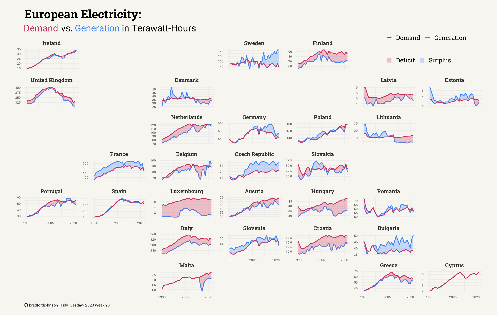

TidyTuesday
TidyTuesday is a weekly social data project in the R community, where participants explore real-world datasets, create compelling visualizations, and refine their data storytelling skills.

![]()
About
I started participating in 2023, drawn to the open-ended nature of the challenge and the opportunity to learn from others. Over time, TidyTuesday has become a space for me to experiment with new visualization techniques, improve my data wrangling workflow, and engage with the broader R and data visualization community.
Beyond creating visuals, I’ve also submitted datasets and connected with other data professionals. This lets praticipants gain inspiration from eachother, share insights; allowing myself to refine my own style each week. While I aim to participate regularly, I prioritize quality over quantity, choosing weeks that challenge me and help me grow when time allows.
Approach
- Data: Weekly datasets from the TidyTuesday GitHub repository, covering diverse topics. Each project starts with exploratory analysis and data cleaning.
- Tools: Built primarily with R, Quarto, and the Tidyverse. I also leverage additional R packages and techniques depending on the dataset and visualization goals.
- Process: Each dataset is an opportunity to test new techniques, work with different data structures, and develop engaging visuals. My workflow includes data wrangling, exploratory analysis, and storytelling through visualization.
See More
You can explore my TidyTuesday gallery here and watch the R visual creation process here through a series of animated GIFs showcasing the step-by-step development of my ggplots.